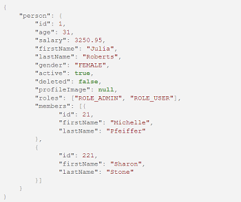
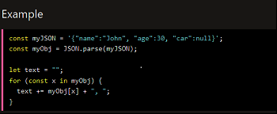
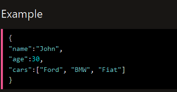
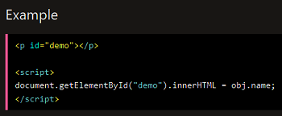
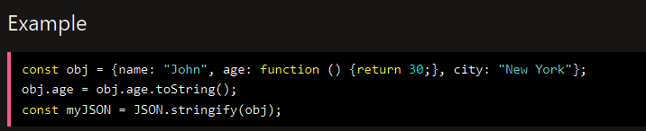

Wprowadzenie
JSON (JavaScript Object Notation) jest formatem danych przeznaczonym do przechowywania i przesyłania informacji. Jest to format tekstowy, który jest łatwy do przetwarzania zarówno dla ludzi, jak i dla maszyn. JSON jest często używany w aplikacjach internetowych i mobilnych.
Składnia
JSON składa się z par klucz-wartość, które są rozdzielone przecinkami. Klucze są napisami, a wartości mogą być liczbami, napisami, tablicami lub obiektami JSON. Przykładowy kod JSON przedstawiony jest poniżej:
Obiekty JSON
Obiekty JSON są grupami par klucz-wartość, które są zawarte w nawiasach klamrowych {}. Przykład obiektu JSON:
Tablica JSON
Tablica JSON jest grupą wartości,które są zawarte w nawiasach kwadratowych []. Elementy tablicy mogą być liczbami, napisami, tablicami lub obiektami JSON. Przykład tablicy JSON:
Parsowanie JSON
Aby przetworzyć dane JSON w aplikacji, trzeba je "sparsować" (przetworzyć) z formatu tekstowego na format obiektu lub tablicy. W języku JavaScript, można to zrobić za pomocą metody JSON.parse(). Przykład parsowania JSON:
Serializacja JSON
Aby przesłać dane w formacie JSON do serwera lub przekształcić obiekt lub tablicę JavaScript na format tekstowy, trzeba je "zserializować" (przekształcić) z formatu obiektu lub tablicy na format JSON. W języku JavaScript, można to zrobić za pomocą metody JSON.stringify(). Przykład serializacji JSON:
